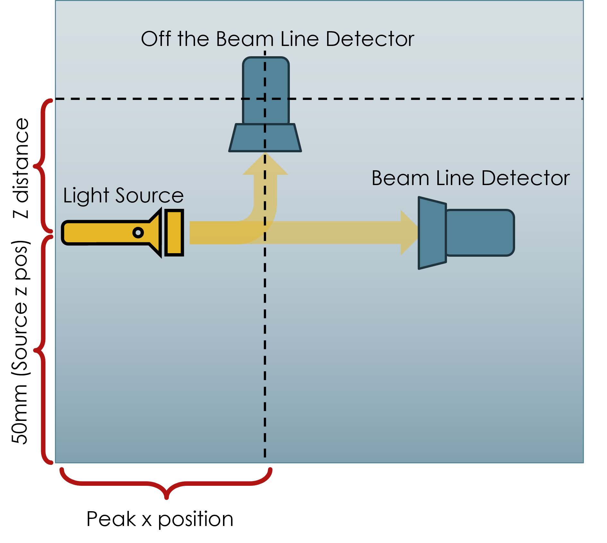

This page is an interactive companion to the report Water Turbidity Results (Kaan Volkan, 2026). It provides a data base of Monte Carlo simulations of light scattering in turbid water, built to help design the off-beam (nephelometric) detector of a low-cost turbidity meter.
A classical turbidity meter shines a light source through the water and measures scattered light with a detector placed off the beam line. The ideal position of detector along the x and z axis depends on the water's inherent optical properties (IOPs), namely the scattering coefficient μs, the absorption coefficient μa, and the volume scattering function. The instrument has to be designed for the very range of water it is meant to measure. These simulations map out that design space so the detector position can be chosen for the expected conditions.
I used Monte Carlo eXtreme (MCX) with 107 photons per run in a homogeneous rectangular domain with 1 mm voxels and absorbing boundaries. A pencil-beam source sits on one face at a height of 50 mm and points along the x axis. Photons leaving the domain through a 1 mm wide strip on the top face are recorded and binned by x position, so each bin acts as a 1 mm2 off-beam detector. The domain height, DomainZ, sets the detector height: the distance from the beam line to the detector is DomainZ − 50 mm.
Scattering follows the Fournier–Forand phase function (Junge parameter 3.56, relative refractive index 1.09, backscatter fraction BFF = 0.0144). This models the strongly forward-peaked scattering measured in natural waters better than Henyey–Greenstein. The database covers μs = 0.01–0.1 mm−1 and μa = 0.001–0.005 mm−1 over a range of detector heights. The simulations were validated against Beer–Lambert attenuation with no scattering, near-isotropic spread at very high scattering, and a numerical 1D radiative transfer solution.
The first plot summarizes every run. Choose μs from the dropdown, tick the μa values to compare, and pick the quantity to show on the y axis; the x axis is the detector height. Clicking any point loads that run's off-beam detector response profile into the second plot, where you can overlay several runs.
The response profile shows the escaping photon weight along the detector strip: the summed statistical weight of photons leaving each 1 mm bin. It is a relative detected intensity, not an absolute power. Each profile is fitted with a gamma distribution, D(x) = A·xk−1·e−x/θ, whose peak at x = (k−1)θ gives the detector position along x that receives the most light.
In the simulated range, placing the detector closer to the beam line both increases the received signal and makes it more sensitive to changes in μs, and therefore to turbidity. As the detector moves farther from the beam, the optimal x position shifts away from the source and the peak signal falls roughly exponentially.

Loading CSV...
mua values:
The x-axis represents the position where photons exit the detector surface. The y-axis, labeled Escaping Photon Weight, is the sum of the remaining statistical weights of all photons exiting within each spatial bin.
This is not simply the number of detected photons. Photons lose weight as energy is absorbed while traveling through the simulated medium. Therefore, photons that experience greater absorption contribute less to the detected signal.
Escaping photon weight can be interpreted as a relative detected intensity. However, it does not currently have physical units such as W/m² because the simulation does not specify an absolute optical source power.